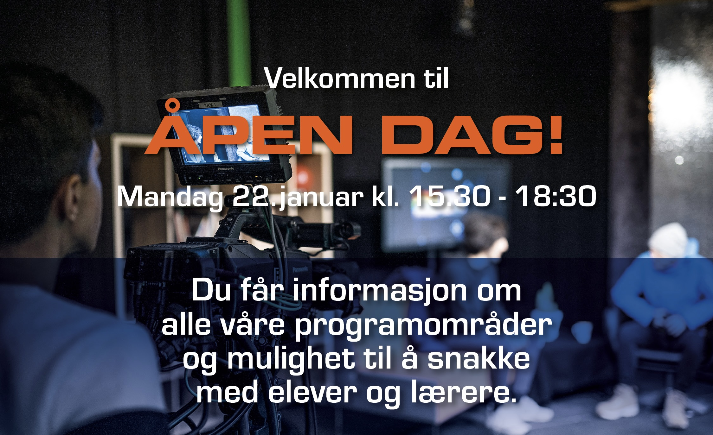

Våre elever på Informasjonsteknologi og medieproduksjon har lagd en nettside for alle 10.klassinger som
ønsker å vite mer om F21. Her har vi prøvd å gi deg et inntrykk av skolen gjennom tekst, bilder, og
film. Håper vi ser deg til høsten!
Studiespesialisering
Informasjonsteknologi og medieproduksjon
Medier og Kommunikasjon
Vi har intervjuet nye og tidligere elever for å høre hva de synes om skolen, og hvorfor det er et godt
valg av skole. Se flere videoer her!
Velkommen til Fyrstikkalleen skole
Les mer om åpen dag herVåre studieretninger
Her har vi lagd korte informasjonsfilmer om de ulike studieretningene, der vi presenterer noe av det du kan forvente deg og hvem de passer for.
Studiespesialisering
Informasjonsteknologi og medieproduksjon
Medier og Kommunikasjon